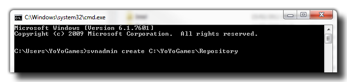
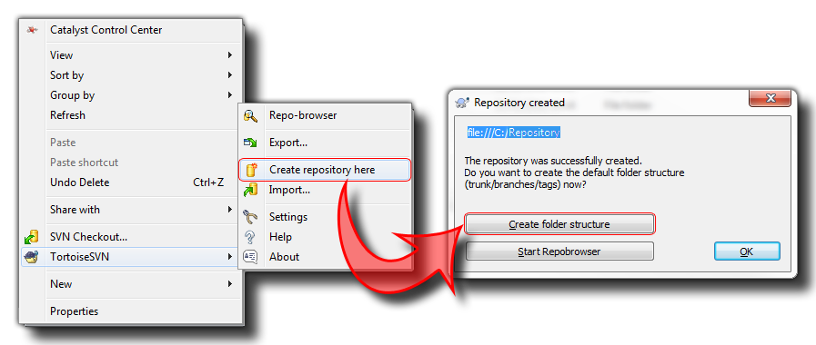

Before even opening GameMaker: Studio and working with
Source Control, you will need to setup your PC (and that of your
co-workers if you are in a team). GameMaker: Studio comes
bundled with versions of SVN that have been tried and tested with the
software for compatibility, and if you do not have any other SVN
versions on your machine this will be the default version that you
use. However, if you already have SVN installed, you can choose
which to use from the Source Control
Preferences Tab (the default is that which is installed with
GameMaker: Studio).
Please note, that for optimum performance and to minimise problems
all machines involved should be using the same version of
the software, so if one machine is on (for example) v1.8.72, then
they all should be using the v1.8.72 of that software. This
is one of the reasons that we recommend you use the version bundled
with GameMaker: Studio as it will ensure that your whole
team is using the same version at all times.
Once you have installed your SVN tools, you will need to make your
Repository. This is where all your files, backups and edits
will be stored and is normally hosted on a separate server, either
on-line or locally. To create the initial repository, and generally
use your SVN, you can do it in one of two ways:
- either use command line functions to directly communicate with SVN or
- download and install some form of windows interface like TortoiseSVN
We recommend some form of windows based UI for dealing with all the SVN functions as it greatly simplifies everything and some of the functions that it offers (like conflict resolution and log files) are easier from outside the GameMaker: Studio IDE, but the final choice is up to you and depends on what you feel most comfortable with!
NOTE: These guidelines are still generally applicable to GIT or Mercurial solutions, only you will have slightly different tools and setting up repositories works differently. You should see the documentation for your chosen SCM solution to get information on how to set up the initial repository and to find out the commands available, as it is not covered here.
If you are happy using the command line functions then you can
create the repository easily by opening the windows command prompt,
browsing to the network location where you wish to create the
repository (or just make sure to use the full path to the location)
and typing:
svnadmin create NAME
where "NAME" is the name you wish to give your central repository
(something like "Source" or "Repository"). Please note, that if the
repository is to be created in a sub-folder then that sub-folder
must already exist, although the repository itself will be
created by SVN. The code should look something like this:

Then press Enter and your repository will be created.
Note that the above example is showing a path to a local
repository (on the same computer) but you can change the path to a
web address for an online repository (recommended).
Once you have installed your windows client for SVN, you should
browse to the network location where you wish to create the
repository and there create a new folder. Give this folder the name
you want to use for your central repository (something like
"Source" or "Repository") and then right click on this folder. You
should then go down the pop-up window to your SVN client and find
where it says "Create repository here." It should be something like
this depending on what SVN client you have installed on your
system:

The above image was made using Tortoise SVN, so the exact method
of going about this may vary depending on your client application,
however all windows SVN Clients have basically the same toolset
used for creating your repository.
If you have a network for your group then you may want to create
a repository on your server, or you may wish to create an online
repository using one of the many free repository services that are
available out there. if you are using an internal server or local
network, then the simply follow the above instructions for a local
repository but instead of creating the folders on your own PC, you
will create them on your server. However, if you are using an
online repository then you will need to follow these steps:
- Sign in (or register) with your chosen site
- Create a new project
- Make sure that when filling in the details of your project that you have selected Subversion (SVN) as your version control system
Your online repository has now been created.
NOTE: Each online repository is slightly different so read the documentation related to the one that you choose! This is only a rough guide to get you started.